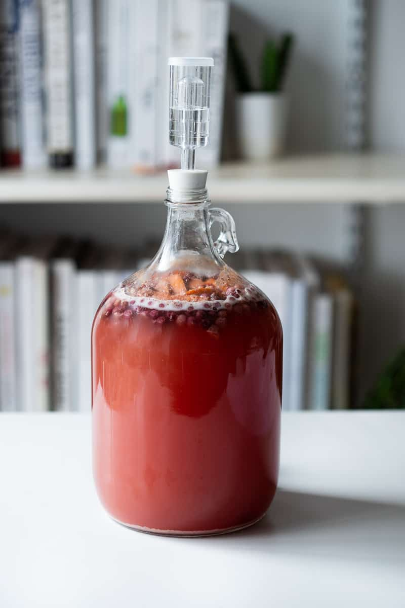

A Simple Mead Recipe

Description
Though the Valhallans were known for their food and drink "fit for kings and jarls,"
this simple mead recipe will brighten your life regardless of your previous (or current)
life's royal status. Mead is an alcoholic beverage made by fermenting honey mixed with
water, and sometimes with added ingredients such as fruits, spices, grains, or hops.
Things You Will Need
- A lot of things
- A bottle, probably
- Some yeast, maybe
Equipment
- Sanitizer
- Large Pot
- Long Handled Spoon
- Large Funnel
- One Gallon Glass Jug with Airlock (includes lid)
- Thermometer
- Auto Siphon with Tubing
- Bottling Wand
- Flip Top Bottles
Ingredients
- water non-chlorinated or filtered
- 2-3 pounds honey depending on how sweet you want the end product to be
- berries or fruit of any kind fresh or frozen, about a cup
- 1 orange
- 10 raisins
- 1/2 package champagne yeast or other wine yeast
Steps
- Sanitize everything that will be used in the brewing process.
- Heat about 1/2 gallon of non-chlorinated water in the pot on medium heat. Once it's warm, but not boiling, add the honey and stir it so it all dissolves. Turn off the heat.
- Put the berries or other fruit, orange slices (skin and all), and raisings into the one gallon jug.
- Use the funnel and carefully pour the honey water mixture into the jug.
- Top off the jug with cold (preferably filtered) water, leaving at least 2 inches of head space on top. Put the lid on the jug and gently mix everything around a bit.
- Make sure that the temperature of the must is below 90F, then add 1/2 packet of champagne yeast. Put the lid back on tightly and this time shake the jug for a minute or two to distribute the yeast.
- Put a little water in the airlock to the line, then put the rubber stopper end into the jug. Put the jug in a dark place. It should start bubbling within 12-24 hours.
After about 4-6 weeks of fermenting, once all bubbles have stopped rising in the jug and airlock, the mead can be bottled and aged.